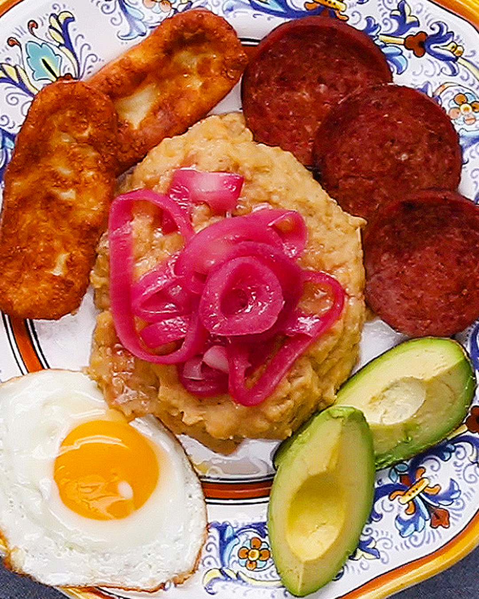

Odin's Tres Golpes

Ingredients
- 4 plantains
- 1/2 lbs of "queso de freir
- 1/2 lbs of Dominican salami
- 3 eggs
- 1/2 cup of oil
- 1 teaspoon of salt
- 2 tablespoons of butter
- Avocado slices
Directions
- Prepare Mangu
- Place the plantain chunks in a pot, cover with water, and add salt.
- Boil the plantains until they are tender, about 15-20 minutes.
- Drain the water and mash the plantains with a fork or masher until smooth.
- Optionally, mix in butter or olive oil for added flavor.
- Fry Cheese
- Heat oil in a skillet over medium-high heat.
- Fry the cheese slices until they are golden brown on both sides.
- Remove from the skillet and place on a paper towel to absorb excess oil.
- Cook Salami
- In the same skillet, cook the salami slices until they are browned on both sides. You can use the same oil from frying the cheese.
- Fry Eggs
- In the same skillet, cook the eggs in olive oil.
- Assemble "Los Tres Golpes"
- Plate a serving of mangu as the base.
- Arrange the fried cheese on top of the mangu.
- Place the cooked salami on the side.
- Garnish with slices of avocado if desired.
- Serve
- "Los Tres Golpes" is traditionally served for breakfast. Enjoy this flavorful Dominican dish with a side of fried eggs if you like.